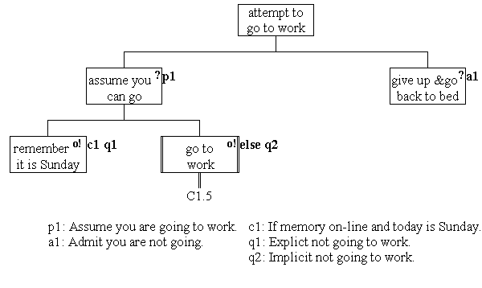

JSP posit and quit

The component attempt to go to work
posits assume you can go and admits
that you should give up and go back
to bed. The assume you can go
component is a selection whose remember it is Sunday
component provides an explicit quit controlled by
condition 1. The alternative selection is a call of the
subprogram go to work which may cause an
implicit quit under some circumstances. (For example if
there are the wrong kind of leaves on the line).
An explicit quit is implemented by the
developer deliberately throwing an exception. An implicit quit is an exception thrown within a
subprogram and not handled and so is propagated from the
subprogram to its calling environment.
A posit/ admit design must contain a
single posit and at least one admit connected at the same level.
It can contain any number of, implicit or explicit, quits within
the admit component at any level.